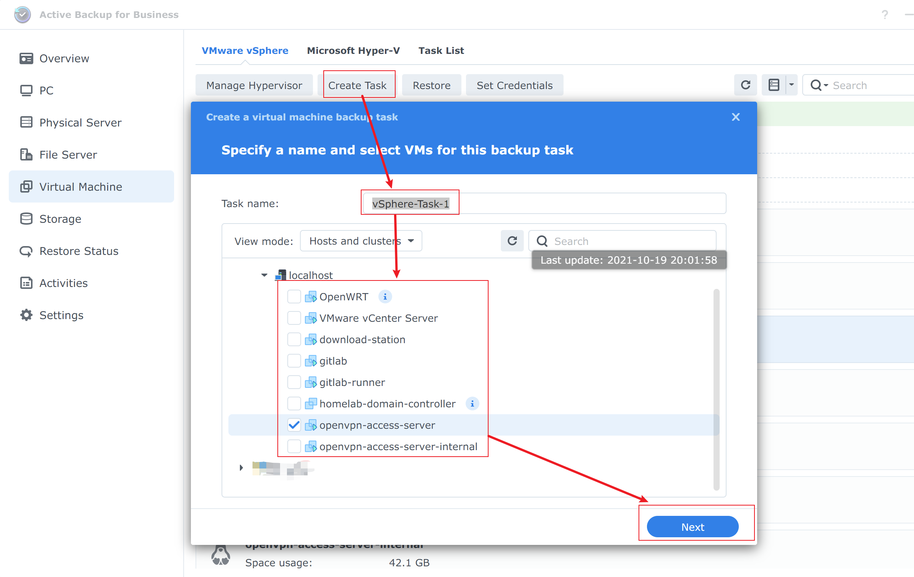

TL;DR（太长不读版本）
大致思路就是，在Homelab环境中，利用Synology套件Active Backup for Business进行Vmware vSphere虚拟机备份。
数据的灾备是很重要的，就像是开车系安全带，骑小摩托戴头盔，都是为了安全。在这篇博客中，将带着大家一起看看在利用群晖NAS备份vsphere中的虚拟机。
Active Backup for Business
Active Backup for Business是群晖NAS的一个套件。
主要功能：
- 支持Windows 服务器/PC、Linux服务器、SMB/rsync文件服务器以及VMware vSphere/Microsoft Hyper-V虚拟机备份
- 灵活的计划和保留策略可自定义备份策略
- 支持备份数据还原，包括完整设备还原、即时还原和精细文件还原
详细信息参考 Active Backup for Business技术规范
从头开始创建一个备份任务
第一步： 安装并打开Active Backup for Business
在套件中心中安装Active Backup for Business，该套件是免费的，很实在。
安装完成之后，打开它。
第二步：添加一个Hypervisor
Hypervisor，也称为虚拟机器监视器或 VMM，是创建和运行虚拟计算机 （VM） 的软件。
按照下图添加你的esxi或者vCenter：
添加完成之后，就可以在界面上看到Esxi或者vCenter的机器了，如下图所示。

第三步：创建备份任务
在创建过程中，我们通常会指定一个备份名称（上图中是vSphere-Task-1）， 然后可以选择是备份一台虚拟机还是多台虚拟机（上图中选中了openvpn-access-server），然后点击下一步。
在列表中，选中一个共享文件夹用来存放备份数据。安装套件的时候会默认创建一个叫ActiveBackupforBusiness的共享文件夹。然后点击下一步。
继续点击下一步。
在这一步中是配置备份任务。可以使用默认配置，或者根据自己需求配置。然后点击下一步。
这是一个检查页面，没问题就直接点击下一步。
这一步就是很重要的一步，默认情况下是手动备份。这里推荐使用定时备份，这就不需要人为干预了。这样的备份也就更有意义了。然后下一步。
这一块儿是设置保留策略，推荐使用。可以根据自己的情况进行选择，然后下一步。
这一块儿是设置恢复权限，然后下一步。
整个备份任务的总结，检查一下，没有问题就点击完成。这时候会有弹窗弹出，讯问是否现在备份，可根据自己的实际情况进行选择。
到任务列表中，我们就可以看到刚才创建的备份任务以及上一次备份状态和下一次备份时间。
第四步：备份
定时备份任务会定时被触发，而手动备份就需要自己手动触发。
恢复
在虚拟机列表中选中已经备份了的虚拟机，然后点击恢复
从版本列表中选择一个备份版本，然后下一步。
选择恢复到VMware vSphere，然后下一步
选择快速恢复还是完全恢复。
快速恢复：将NAS的磁盘挂载到Esxi上作为Datastore。
完全恢复：将备份数据复制到Esxi的Datastore中。
根据自己的实际情况选择，然后下一步。
选择虚拟机恢复到哪里，支持原路径恢复，也可以更改到新的位置。然后下一步。
检查一下，没有问题就点击完成，开始恢复。
总结
在Homelab环境中，利用NAS对数据备份可以有效地保证数据安全。
重要的数据一定要多备份。